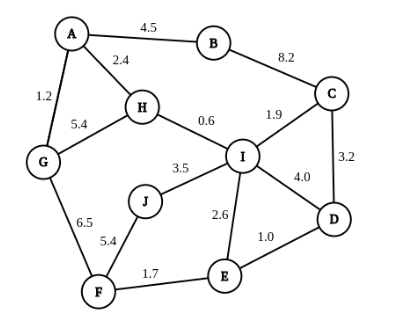

Python implementation of distance-vector routing protocol using concurrency and sockets. What is Distance-Vector Routing Protocol?

Pictured below is the topology for the graph displayed in the program, although any correctly formatted graph could be fed to the program if need be.
The program uses the distance vector algorithm and the Bellman-Ford equation. The reachability matrix is simply a dictionary storing the destination as the key and the distance and path to this destination as value. Upon receiving the distance vector packets from neighbours, a node will 1) incorporate the given destination and path into the reachability matrix if it is not already there or 2) if the distance (including distance to the sending node) to the given destination is less than the distance currently in the reachability matrix, the reachability matrix is updated with the lesser distance. This is an iterative, asynchronous, distributed process that builds up the reachability matrix over time. As a result, when computing least cost paths, the reachability matrix is simply printed out for nodes that are online only.
The work flow of my program is as follows. When the program is called, a node class is initialised and it reads in its neighbours and link costs directly from the config file, which is kept up to date by neighbouring nodes even when the current node is offline, then builds an initial reachability matrix based on this. Then, six threads are launched at once, all of which run until 'self.stop' becomes True. Each thread is handed a function pointer to the function it will be operating until the program is closed. Below is the outline of each thread task.
Thread 0: Packet sender. Nodes send out distance vector packets directly from their reachability matrices to their neighbours every 10 seconds. One problem here was that nodes would send out distance vector packets of offline nodes immediately, so I solved this by having the function sleep for 3 seconds at the beginning to check which neighbours are offline before sending out initial packets.
Thread 1: Packet receiver. One issue with blocking sockets is that the user interface stopped working. To solve this, the socket was set to non-blocking, hence why the data is received in a try except block. There are two types of messages to be received, distance vector packets and link cost changes. Distance vector packets are processed as outlined in the routing algorithm section above. If it is a changed link cost packet, first we check if it is 'new', which will be outlined in the 'manage seen packets' thread below. Changed link cost packets are when a link cost change has occurred in the network. If the change is for a neighbour, then the current node will update their config file. Afterwards, regardless of whether it was a neighbour change, the reachability matrix is reset since we don't know how the change will affect it, which was a solution I implemented that was much more successful than trying to detect whether a link cost change did or did not affect the reachability matrix. Then, the link cost packet is forwarded to all neighbours, except the sender of the packet.
Thread 2: Compute least cost paths. Prints out the reachability matrix every 60 seconds.
Thread 3: User interface. Accepts the input 'q' to gracefully quit the program, outlined further in the special system quirks section. Otherwise takes in a neighbour and distance for updating. If the neighbour is detected as being offline or crashed, this causes problems that if they come online then they will have not heard about the new link cost change. To solve this, the current node will detect they are offline and update their config file for them, which persists for in case they come back online. The node will update their own routing table and reset their reachability matrix too since we don't know how it will affect least cost paths, and then the node will send a changed link cost packet to neighbours, who will forward it to all other nodes. It will also store the hash of this packet in an instance variable 'seen packets' to make sure that this packet does not infinitely propagate, outlined below.
Thread 4: Manage seen packets. Since link cost changes are sent to all neighbours to notify them, it is possible that they would infinitely propagate, which would use up unnecessary resources and also could result in incorrect information being spread. In order to remedy this, a thread will manage the hashed packets stored in an instance variable such that if a thread has 'seen' the hash of a link cost change packet in the last five seconds, it will ignore it. This seen packets list is reset every five seconds.
Thread 5: Ping. This is how the program handles crashed or offline nodes. Rather than keeping track of which nodes have or haven't sent a message to this node in the last 10 seconds (which I tried to do and it caused many problems with my existing architecture), I have nodes 'ping' other nodes by probing their ports to see if they are connected or not. A port that can be connected to is free, meaning the node is offline, otherwise it is online. This is a very simple and problem free way of checking if a node is online or not, and the node only checks its neighbour nodes before adding it to the instance dictionary of crashed nodes. Newly crashed nodes are removed from the routing table and the reachability matrix is reset. Conversely, newly online nodes are removed from the crashed nodes dictionary and are read in from the config file and the reachability matrix is reset. One potential issue here is a node coming online could be blocked by another node pinging its port. My solution was that the connection function attempts to connect 20 times over 0.05 second intervals, meaning that even if in the tiny chance it tried to connect at the same time as another node pinging it and failed, it has another 19 attempts to do try and connect again. Thorough testing has shown this is robust.
In each thread task, they are idle for X seconds at a time. For example, least cost paths which prints every 60 seconds and is sleeping for the rest of the time. If the user wanted to close this node program, they would need to press ctrl + c multiple times and the program would crash messily. If the user implemented a 'press q to quit' option that set self.stop = True, they would still have to wait up to 60 seconds for some of the worker threads (e.g least cost paths) to check if self.stop was equal to True, since the time.sleep function does not take breaks. Instead, I implemented a custom_sleep(int a) function that loops for a * 2 iterations, calls time.sleep(0.5) each iteration and checks self.stop too in between. This way, the user has to wait a maximum of 0.5 seconds for their 'q' command to close the program and it can interrupt any sleeping thread. Furthermore, this allows the program to join all threads and close the socket in a very clean way.